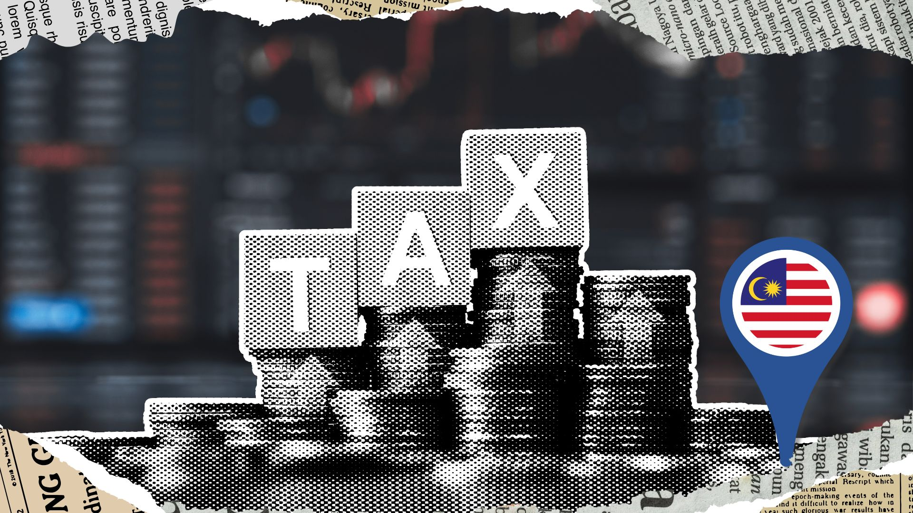

Current year basis
Tax is based on income earned during the current year.


>>>>>>> origin/feature/servicesMalaysia's tax system is built around two main types of tax: direct tax and indirect tax. Its administration follows several key principles that determine how income is assessed and how taxpayers fulfil their tax responsibilities.
Tax is based on income earned during the current year.
Taxpayers are responsibleta for calculating and reporting their own taxes.
The source of income determines whether it is taxable in Malaysia.
Malaysia generally taxes income originating from Malaysian sources. However, certain foreign-sourced income received in Malaysia may be exempt from tax under specific provisions.
For example, a Malaysian resident who earns rental income from a property located overseas may qualify for an exemption when bringing that income into Malaysia, provided the relevant conditions are met.
Select a category to explore the taxes included in each part of the framework.
Taxes listed under the direct tax category.
Taxes listed under the indirect tax category.
Explore each direct tax and the key points outlined in the Malaysia tax system.
Income tax is a direct tax imposed on income earned by individuals and businesses in Malaysia. It is administered by the Inland Revenue Board of Malaysia (LHDN). The amount of tax payable depends on the taxpayer's chargeable income, tax residency status and applicable tax rates.
Income tax covers several categories, including individual income tax, corporate income tax and withholding tax. Individuals are generally taxed on employment, business, rental and other taxable income, while companies are taxed on their chargeable business profits.
Income tax is calculated by applying the relevant tax rates to chargeable income after allowable deductions, exemptions and reliefs have been considered. Resident individuals are generally subject to progressive tax rates, while companies are subject to corporate tax rates.
Individual income tax: Resident individuals are taxed according to progressive rates, ranging from 0% to 30% based on their chargeable income. They may also qualify for personal tax reliefs and rebates under the Income Tax Act 1967. Non-resident individuals are generally taxed at a flat rate of 30% on taxable income, subject to specific rules and exemptions.
Corporate income tax: Companies are generally taxed at 24% on their chargeable income. Qualifying small and medium-sized companies may enjoy reduced rates of 15% on the first RM150,000, 17% on the next RM450,000 and 24% on the remaining chargeable income, subject to the applicable eligibility requirements.
Partnerships: A conventional partnership is generally not taxed as a separate entity. Instead, each partner is taxed on their respective share of the partnership's income.
Withholding tax is a mechanism under the Income Tax Act 1967 that requires a Malaysian payer to deduct tax from certain payments made to non-residents and remit it to LHDN. It commonly applies to payments such as interest, royalties, contract payments and certain technical or service fees.
Common domestic withholding tax rates include:
The applicable rate may be reduced under an applicable Double Taxation Agreement (DTA). The payer is responsible for deducting and remitting the tax within the prescribed time limit.
Taxpayers are required to maintain proper records, submit tax returns and settle their tax liabilities within the prescribed deadlines. Businesses generally prepare tax computations based on their accounting results, adjusted for tax purposes.
Malaysia also has Double Taxation Agreements with various countries to help prevent the same income from being taxed twice. In addition, tax reliefs, deductions and incentives may be available to eligible taxpayers.
Capital gains are not automatically exempt from tax. Depending on the asset and taxpayer, gains may be subject to Real Property Gains Tax or Capital Gains Tax under the applicable legislation.
Real Property Gains Tax (RPGT) is a tax imposed on chargeable gains arising from the disposal of real property situated in Malaysia. This includes residential properties, commercial buildings, land and other qualifying real property.
The amount of RPGT payable depends on factors such as the disposer’s category and the period for which the property has been owned before disposal.
A Real Property Company is generally a controlled company whose defined value of real property and shares in other real property companies is not less than 75% of the value of its total tangible assets. The disposal of RPC shares may be subject to specific tax rules.
RPGT is generally calculated based on the chargeable gain, which is determined by comparing the disposal price with the acquisition price, after taking into account allowable expenses and adjustments under the Act.
The applicable tax rate depends on the disposer’s category and the holding period of the property. Different rates apply to Malaysian citizens and permanent residents, companies incorporated in Malaysia, and non-citizens or non-permanent residents.
Certain exemptions and reliefs may be available, subject to the conditions prescribed under the Act.
The tax treatment of shares in a Real Property Company depends on the type of disposer and the applicable legislation.
Since the introduction of Capital Gains Tax (CGT) on 1 January 2024, gains from the disposal of RPC shares by companies, limited liability partnerships, trust bodies and cooperatives that are subject to the Income Tax Act 1967 are generally dealt with under the CGT rules rather than RPGT.
However, the disposal of RPC shares by Labuan entities carrying on business activities under the Labuan Business Activity Tax Act 1990 remains subject to RPGT. Other qualifying real property disposals may also remain subject to RPGT.
RPGT returns must be submitted to LHDN within the prescribed period following a property disposal. The disposer and acquirer may also have separate filing and payment responsibilities, including requirements for the acquirer to retain and remit part of the consideration where applicable.
Taxpayers should refer to the latest LHDN guidelines for the applicable filing deadlines, retention requirements and exemptions.
Petroleum Income Tax is imposed on income derived from petroleum operations carried out in Malaysia. It applies to chargeable persons involved in petroleum exploration, production and other activities covered by the Petroleum (Income Tax) Act 1967.
Petroleum operations generally include activities relating to the exploration, extraction and production of petroleum, as defined under the relevant legislation. The tax treatment is governed separately from the general income tax provisions.
A chargeable person is required to prepare accounts of the profits or losses arising from petroleum operations for each relevant basis period. The chargeable income is determined in accordance with the Petroleum (Income Tax) Act 1967.
Petroleum income tax is subject to specific rules and tax rates under the Act. The applicable rate and treatment may depend on the petroleum operations and relevant contractual arrangements.
Taxpayers must submit the required tax returns, accounts and supporting documents to LHDN within the prescribed deadlines.
Stamp Duty is imposed on specified legal, commercial and financial instruments in Malaysia. It is generally charged on the written document or instrument rather than on the transaction itself.
Common examples include property transfer instruments, tenancy agreements, loan agreements, share transfer documents and other legal or commercial documents.
The amount of duty depends on the type of instrument, the consideration or value stated in the document, and the applicable provisions of the Stamp Act 1949. Some instruments are subject to fixed duty, while others are subject to ad valorem duty based on value.
Ad valorem duty: Duty calculated based on the value or consideration stated in the instrument. It commonly applies to property transfers, certain share transfers, leases and security instruments.
Fixed duty: A fixed amount of duty imposed on specified instruments regardless of the transaction value. Examples may include certain powers of attorney, duplicate instruments and other documents listed in the Stamp Act 1949.
Certain instruments and transactions may qualify for stamp duty exemptions, remissions or reliefs under the Stamp Act 1949 and relevant exemption orders.
These may include qualifying property transfers, company restructuring exercises and other transactions that meet the prescribed conditions. Each application is subject to the relevant legislation and approval requirements.
Labuan Business Activity Tax is a tax imposed on the chargeable profits of Labuan entities carrying out business activities in, from or through Labuan. It is administered by LHDN under the Labuan Business Activity Tax Act 1990 (LBATA).
Labuan business activities are classified into two main categories: Labuan trading activities and Labuan non-trading activities. The applicable tax treatment depends on the nature of the activity and whether the entity meets the prescribed substance requirements.
Labuan trading activities include activities such as banking, insurance, trading, management, licensing and other activities prescribed under the relevant legislation.
A Labuan entity carrying on a qualifying trading activity and meeting the prescribed substance requirements is taxed at 3% on its chargeable profits, generally based on the net profits reflected in its audited accounts.
Income derived from royalties and other income from intellectual property rights arising from their commercial exploitation is excluded from the 3% tax computation and is subject to the applicable tax rules.
Labuan non-trading activities generally involve holding investments in securities, stocks, shares, loans, deposits or other property situated in Labuan by a Labuan entity on its own behalf.
A Labuan entity carrying out a qualifying non-trading activity that complies with the prescribed substance requirements may enjoy a 0% tax rate under the LBATA.
Labuan entities must meet the applicable substance requirements, which may include maintaining an adequate number of full-time employees, incurring sufficient annual operating expenditure in Labuan and, for certain non-trading activities, satisfying additional management and control conditions.
A Labuan entity that fails to comply with the prescribed substance requirements may be subject to tax at 24% on its chargeable profits for the relevant year of assessment.
Labuan entities are also required to submit the relevant tax returns and maintain proper records in accordance with the LBATA and LHDN requirements.
Explore the indirect taxes included in the framework.
Sales and Service Tax (SST) is an indirect tax system implemented in Malaysia on 1 September 2018, replacing the Goods and Services Tax (GST). It consists of two separate taxes: Sales Tax and Service Tax, each governed by its respective legislation under the Sales Tax Act 2018 and Service Tax Act 2018.
Sales Tax is a single-stage tax imposed on taxable goods manufactured in Malaysia and taxable goods imported into the country. Service Tax, on the other hand, applies to prescribed taxable services provided by registered persons in the course of business. Service tax also include imported taxable services by any person into Malaysia for the purpose of business.
Businesses must register for SST when they meet the prescribed registration requirements under the relevant legislation. For Sales Tax, manufacturers of taxable goods generally have a registration threshold of RM500,000 in sales value over a 12-month period, subject to applicable conditions and exemptions.
For Service Tax, registration thresholds vary depending on the category of taxable services provided. Businesses exceeding the applicable threshold are required to register with the Royal Malaysian Customs Department (RMCD).
Registered businesses must comply with SST requirements, including issuing appropriate invoices, maintaining records, submitting tax returns and making payments within the prescribed periods.
Excise duty is a type of tax imposed on certain goods imported into or manufactured in Malaysia. The goods subjected to excise duty are:
All above goods have to be declared in customs import declaration Form No. 1 and the duty / tax assessed paid to the customs office where goods are released from customs control.
Customs duty is a tax levied on imports by the customs authorities of a country to raise state revenue, and/or to protect domestic industries from more efficient competitors from abroad.
In Malaysia, all goods dutiable on import are put through customs duty according to Customs Duties Order, 1996.
The duty rates depend on the types of goods imported or exported.
Service Tax on Digital Services (SToDS) is an indirect tax imposed on digital services provided by foreign service providers to consumers in Malaysia. Introduced on 1 January 2020, it applies to services delivered or subscribed through the internet or electronic networks, where the delivery is essentially automated and requires information technology.
Examples of digital services include online streaming platforms, software subscriptions, mobile applications, digital advertising and online platforms. The applicable service tax rate is 8%, effective from 1 March 2024.
Foreign service providers are required to register with the Royal Malaysian Customs Department (RMCD) as Foreign Registered Persons (FRPs) when the total value of digital services provided to consumers in Malaysia exceeds or is expected to exceed RM500,000 within a 12-month period.
A consumer is considered to be in Malaysia when they fulfil at least two of the following conditions:
The taxable period for a Foreign Registered Person is three months (quarterly). Service tax becomes due when payment for the digital service is received, unless approval has been obtained from the Director General to account for tax based on the invoice date.
The service tax return and payment must be submitted to RMCD by the last day of the month following the end of the taxable period.